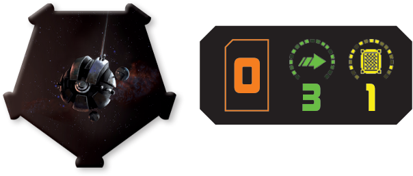

Dark Eye Probe Droid

Types: Device, Remote
System Phase: The DRK-1 probe droid’s controlling player may choose a [2 ], [2 ], or [2 ] template and any set of the DRK-1’s guides. The player then relocates the remote, placing the DRK-1 at the other end of the template. It can be placed overlapping an object this way.
If the DRK-1 overlaps a ship, use the position marker to denote the ship’s position, then place the ship on top of the remote.
Activation, Engagement, and End Phase: No effect.
Other Rules: While a ship locks an object or jams an enemy ship, it may measure range from a friendly DRK-1 probe droid.
After an enemy ship executes a maneuver that causes it to overlap a DRK-1 probe droid, the ship’s controller rolls 1 attack die. On a result, the DRK-1 probe droid suffers 1 damage.